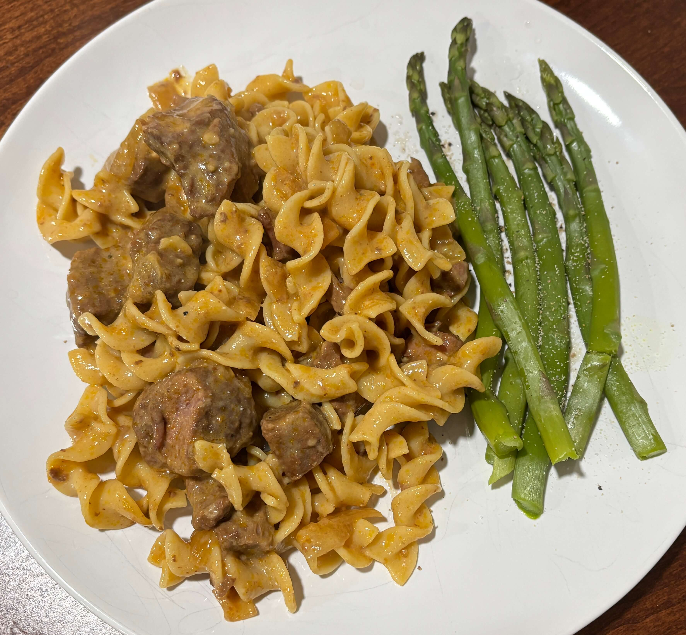

Home
Crockpot Beef Stroganoff

8 servings
Prep:15 min, Cook:6 hours 15 min
Ingredients
- 2 lbs boneless beef chuck steak
- 2 medium onions chopped
- 1 can (10 3/4 oz) condensed golden mushroom soup, undiluted
- 2 tablespoons dijon mustard
- 1 tablespoon worcestershire sauce
- 3 garlic cloves, minced
- salt and pepper
- 2 tablespoons cornstarch
- 2 tablespoons cold water
- 1 cup sour cream
- Hot cooked egg noodles
- Minced parsely, optional
Steps
- Cut steak into 3x1/2 inch strips. In a 5 or 6 qt slow cooker, combine next 9 ingredients. Stir in steak strips. Cook, covered, on low until meat is tender, 6-8 hours
- Transfer steak to a serving dish; keep warm. Skim fat from cooking juices. Mix cornstarch and water until smooth; stir into cooking juices. Cook covered, on high until thickened, 10-15 minutes. Stir in sour cream; pour over beef. Serve with noodles and if desired, minced parsely.
Tips
- Before putting the meat in the slow cooker, brown it in a pan with a little olive oil over high heat for about 2 min per side
- If the meat comes out dry cut the strips larger. Larger pieces hold onto their internal juices much better
- Make sure the meat is almost entirely submerged in the liquid in the crockpot. If it looks dry in the pot, add a 1/2 cup of beef broth or water at the start. This way the top layer of meat wont steam and dry out
- Adding 1 tablespoon of red wine vinegar or even a splash of dry red wine can help soften the beef protein during the long simmer, making the inside feel more tender.